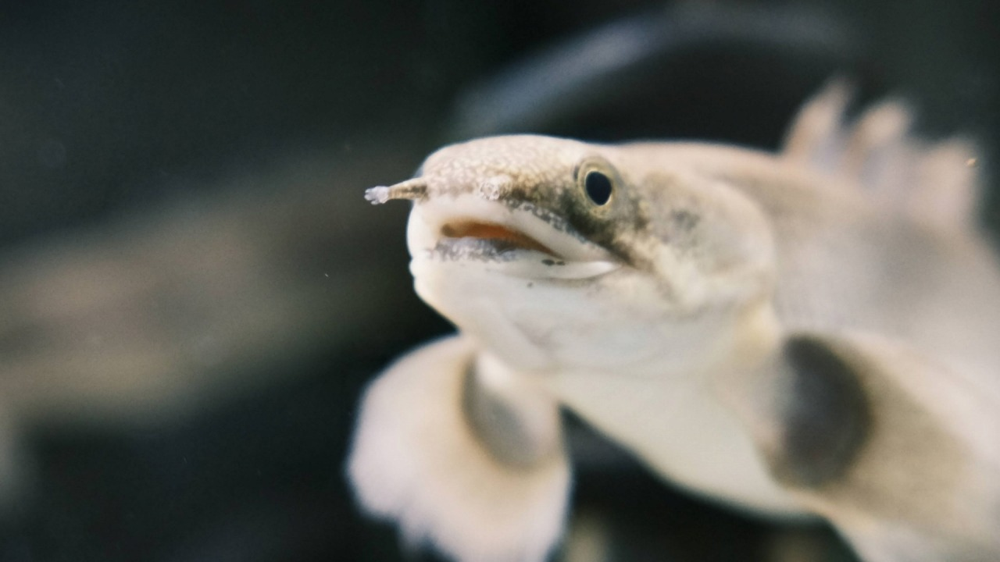
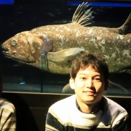

Python
numpyやPandasを用いた基礎的な処理、グラフ等の作図。オブジェクト指向プログラミングによるシミュレータ作成。PyMCを用いたベイズ推定。Streamlitを用いたWebアプリケーション開発。BioPythonを用いたゲノム解析。


博士(理学) Doctor of Science
Evolutionary Biology
Molecular Evolution
Terrestrial Adaptation of Vertebrate
今から約3億7千万年前、我々陸上脊椎動物の祖先となる魚が陸上へと生息範囲を拡大していきました。化石に残された情報から骨格などの進化を見ていくことは可能ですが、体内の代謝などについては未だ不明な点が多く残されています。私は現生の魚のゲノム解析、遺伝子発現解析を通じて「魚から両生類へ」という進化の段階を明らかにしていきます。
About 370 million years ago, fish, the ancestor of all terrestrial vertebrates, expanded their habitat on land. Although it is possible to understand the evolution of skeletons and other parts of the body from information left behind in fossils, there are still many unanswered questions about internal metabolism. Through genome analysis and gene expression analysis of living fish, I will clarify the evolutionary stages of "fish to amphibians".
ポリプテルス、アミメウナギ、ハイギョといった「陸上適応能力をもつ"古代魚"」を中心に、円口類(ヤツメウナギ・ヌタウナギ)、軟骨魚類(サメ、エイ、ギンザメ)、シーラカンス、両生類。
研究テーマと、これまでの論文の解説
論文(全て査読あり)・学会発表・ソフトウェア
スキルと連絡先
numpyやPandasを用いた基礎的な処理、グラフ等の作図。オブジェクト指向プログラミングによるシミュレータ作成。PyMCを用いたベイズ推定。Streamlitを用いたWebアプリケーション開発。BioPythonを用いたゲノム解析。
Rを用いた遺伝子発現解析(TCC等)、統計解析、グラフ作図。
Amazon Linux2、Ubuntuなど。自作PCへの導入からゲノム解析・発現解析のためのパイプラインの構築まで。Dockerイメージの自作など。
Django/SQL/HTML5/CSS/AWSを用いた商用向けWebアプリケーションの開発受託経験あり。立案から仕様の定義、開発からクラウドへの構築、運用まで。AWSはEC2, ELB, S3, RDS, SES等を使用。現在はStreamlitでの小規模Webアプリ開発が主。
お問い合わせは、Bluesky、ResearchGateかメールでお願いいたします。